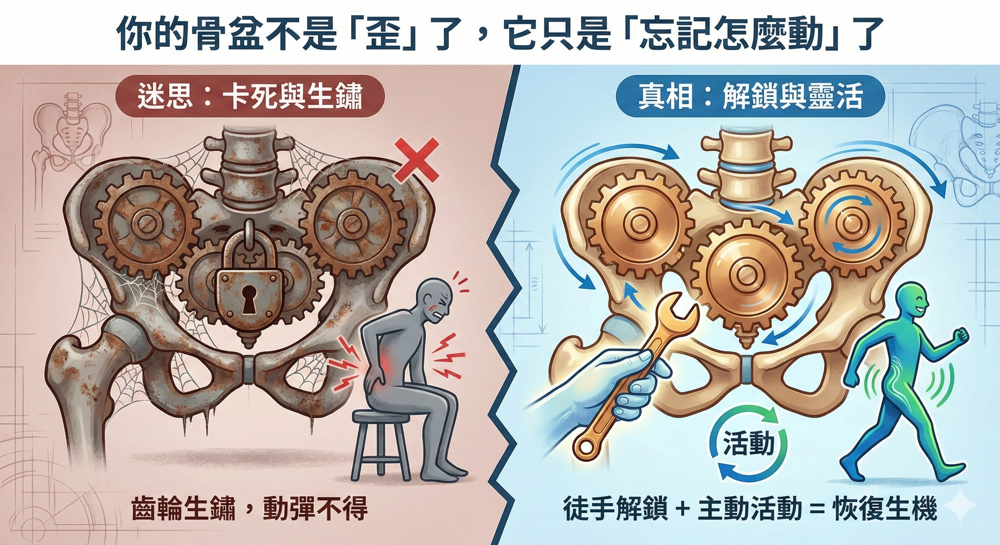

你的骨盆不是「歪」了，它只是「忘記怎麼動」了
【 你的骨盆不是「歪」了，它只是「忘記怎麼動」了 】
—— 寫給那些以為自己「椎間盤又突出」的焦慮靈魂
「醫師，救命......我三天前突然『卡』住，現在彎腰不行、後仰也不行， #下背痛 個半死，是不是我二十年前的椎間盤突出又復發了？」
這週晚診，一位壯碩的大哥扶著腰走進來，臉色慘白，眼神裡滿是焦慮。
對於有過 HIVD（椎間盤突出）病史的人來說，那種痛是刻骨銘心的夢魘，正所謂“一朝被蛇咬，十年怕草繩“。只要腰一痛，人生跑馬燈就開始轉：是不是又要開刀？是不是又要躺床一個月？
經過仔細檢查，告訴他一個好消息：
「放心，你的神經沒被壓到，腳也不麻。你的椎間盤很乖，這次鬧脾氣的是你的『骨盆』。」
-
⚙️ #骨盆 是身體的「避震器」，不是「積木」
很多人（包括這位大哥）都有個誤解：
「骨盆是不是歪了？是不是要把骨頭『喬正』才會好？」
其實，骨盆沒你想的那麼脆弱，也沒你想的那麼死板。
你可以把骨盆想像成身體的「大齒輪」。
當我們走路、彎腰、坐下時，這個大齒輪（特別是中間的薦髂關節）必須要能順暢地滑動、微調。
健康的骨盆，關鍵不在於「正不正」，而在於「靈活不靈活」。
-
🛑 當齒輪「生鏽」卡死時......
這位大哥的問題，就是他的齒輪「卡死」了。
因為姿勢不良或瞬間受力，他的薦椎忘記了該怎麼「點頭 (Nutation)」來卸除壓力。
想像一下，一台車的避震器壞了，變成一根硬邦邦的鐵棍，所有的震動都會直接衝擊車體（下背）。
這就是為什麼他會痛到挺不直腰。
不是骨頭壞掉，是關節「鎖住」了。
-
🏃♂️ 這也是為什麼我們強調：你需要「活動」
針對這種「假性椎間盤突出」，吃止痛藥通常沒什麼用（因為藥物鬆不開卡死的關節）。
透過精準的徒手治療與針灸，我們幫這位大哥釋放掉關節周圍那些緊繃到不行的韌帶與張力，讓他當場找回活動的能力。
但治療結束後，我語重心長地跟他說了一句話：
「大哥，我今天幫你把生鏽的齒輪修好了，但要讓它不生鏽，你要負責把它『轉』起來。」
這就是為什麼我們總是不厭其煩地強調「活動」與「運動」的重要性。
- 『徒手治療』 是幫你把「卡住的門」打開。
- 『主動運動』 則是你要自己「走出去」。
骨盆的設計原本就是為了應付走路、蹲跳、甚至跑步的。
如果你長時間久坐不動，或者因為怕痛而不敢動，這些精密的關節就會像沒上油的機器一樣，慢慢再次鎖死。
只有透過正確的、規律的活動，讓薦髂關節保持靈活動態的緩衝能力，關節液才會流動，軟組織才會保持彈性。
-
👨⚕️ 真心話小提醒
如果不幸閃到腰，先別自己嚇自己。
下背痛的原因很多，「骨盆卡住」（薦髂關節失能）其實比你想像中更常見。
如果你的痛點很固定、變換姿勢時特別痛，但腳不會麻......
那恭喜你，你可能需要的不是開刀，而是一位懂結構力學的醫師或治療師幫忙你「解鎖」。
解鎖之後，請記得：最好的保養品不是藥，而是你的「活動力」。
把骨盆養「活」了，腰自然就不痛了。
#骨盆校正 #下背痛 #閃到腰 #薦髂關節 #椎間盤突出 #HIVD #徒手治療 #結構治療 #要會動才重要 #運動是良藥
太初中醫診所 東門中醫
中醫師 黃彥鈞
---
🔎 科學證據研究 (References)：
1. Vleeming, A., et al. (2012). The sacroiliac joint: an overview of its anatomy, function and potential clinical implications. (Journal of Anatomy).
(權威文獻告訴我們：骨盆的穩定不是靠「硬碰硬」，而是靠「力封閉 (Force Closure)」——也就是肌肉與韌帶的彈性協調。強調關節的微動能力對於負重傳導至關重要。)
2. Laslett, M. (2008). Evidence-based diagnosis and treatment of the painful sacroiliac joint.
(研究顯示，約有 15-30% 的下背痛源自於薦髂關節，而非腰椎本身。精準的觸診與理學檢查是鑑別診斷的關鍵。)
3. Lee, D. (2011). The Pelvic Girdle.
(物理治療經典著作：骨盆活動度喪失（Hypomobility）會導致腰椎代償。這證實了「恢復活動」比單純「矯正位置」更重要。)
4. Richardson, C. A., et al. (2002). The relation between the transversus abdominis muscles, sacroiliac joint mechanics, and low back pain.*
(指出核心肌群的主動收縮（運動）能增加薦髂關節的穩定性與活動效率，這是被動治療無法取代的。)
5. Sturesson, B., et al. (1989). Movements of the sacroiliac joints.
(科學證實骨盆在負重時確實存在微小的旋轉與平移運動。如果缺乏日常活動刺激，這些微動關節容易僵硬。)
本文案例僅供衛教分享，且已去識別化處理。每位患者病況不同（如 HIVD 病史需謹慎評估），若有急性疼痛，請務必尋求專業醫師進行鑑別診斷。
